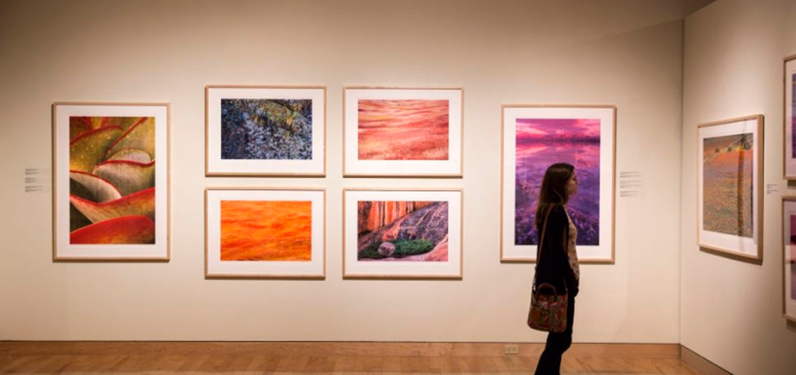

↳SOBRE EL
PROYECTO


PAOS GDL es un centro de investigación y producción cultural enfocado en las distintas manifestaciones artísticas contemporáneas, sus procesos de creación y la educación artística. PAOS promueve el conocimiento, el pensamiento crítico y el encuentro entre creativos y públicos a través de dos programas principales: Programa Educativo y Programa de Residencias (locales e internacionales).
↳SOBRE LA
CASA
MUSEO TALLER
JOSÉ CLEMENTE OROZCO

El Museo Taller José Clemente Orozco alberga a PAOS GDL;
esta casa en que se encuentra el Museo Taller José Clemente
Orozco está en lo que fuera su último hogar y estudio en
Guadalajara.
Construida por el Ingeniero Edmundo Ponce Adame,
de acuerdo a las especificaciones y necesidades del mismo Orozco,
la construyó desde finales de 1948 hasta principios de 1949 y
tenía planeado vivir en ella toda su vejez.
Este taller fue el segundo que Orozco tuvo en Guadalajara.
El primero, ubicado en
López Cotilla 814 y habitado mientras realizaba los murales del
Paraninfo de la Universidad de Guadalajara y el Hospicio Cabañas,
lo había vendido antes de adquirir el terreno en la calle Aurelio
Aceves.
Clemente Orozco Valladares, hijo del pintor, menciona que
los dos talleres de Guadalajara, y otros dos en la Ciudad de México,
fueron diseñados por su padre. De igual manera, en el libro José
Clemente Orozco, Alma Reed menciona que “en la planeación y diseño
del edificio de tres pisos, el artista había puesto en servicio no
sólo sus tempranas prácticas arquitectónicas sino los métodos de
construcción que había aprendido durante sus 3 años en la Escuela
de Agricultura de San Jacinto”.
A pesar de que el diseño original
fue realizado por José Clemente Orozco, la construcción fue
modificada con la intervención del ingeniero civil Edmundo Ponce Adame,
quien se encargó de los cálculos y la supervisión de la obra.
El diseño final fue, entonces, una mezcla de los estilos de Orozco
y Ponce Adame; con respecto a la construcción el ingeniero dijo:
“El diseño fue mío, pero siguiendo las instrucciones del maestro,
me dijo: yo quiero aquí una sala. Nos fuimos ajustando a las
posibilidades y ya resultó el diseño definitivo, aquí lo principal
es propiamente el estudio, José Clemente no le daba mucha importancia
al resto y él fue quien dijo las dimensiones, me dijo: quiero que tenga
9.50 libres de altura” No hay certeza de la fecha exacta en que José
Clemente Orozco comenzó a habitar la casa taller, pero a finales de
mayo de 1949, antes de que estuviera terminada, ya residía en ella
de forma itinerante, pues iba y venía de la Ciudad de México a
Guadalajara continuamente.
El Museo Taller La creación y realización
del Museo Taller se logró gracias a la inspiración y deseos de la
señora Margarita Valladares, viuda de Orozco, que comprendió la
importancia de la composición del trabajo de su esposo. Ella se
encargó de gestionar lo necesario ante el Instituto Nacional de
Bellas Artes y el Gobierno del Estado de Jalisco para el enriquecimiento
del patrimonio mexicano al difundir la obra pictórica del artista y
los rasgos importantes de su vida personal. Los trabajos de modificación
de la casa y la adaptación de sus espacios para darle mayor funcionalidad
al nuevo museo, comenzaron en marzo de 1951. Los trabajos más significativos
de la casa consistieron en: Retirar uno de los muros de la cocina y del
cuarto de lavado Tapar la puerta del mezanine que daba al balcón Tapar
una abertura en la ventana principal, que Orozco utilizaba para secar
las obras ya terminadas. Añadir un nivel más a la casa.
Estas modificaciones, aunque significativas, no afectaron el diseño
original visualizado por José Clemente Orozco y realizado por Edmundo
Ponce Adame. El Museo Taller José Clemente Orozco, inaugurado el 9
de noviembre de 1951, fue el primer museo dedicado por completo a
un artista en México. Al acto inaugural asistieron personalidades
como Santiago Fraga, oficial mayor de la Secretaria de Educación,
y Jesús González Gallo, el entonces gobernador del Estado de Jalisco.
Ese mismo año, la casa fue adquirida por el Gobierno del Estado.
El Museo Taller exponía los instrumentos de trabajo, lienzos de
caballete, pinturas, fotos personales y el mobiliario original de la
casa en que habitó el artista antes de morir, además de ofrecer
exposiciones temporales de la amplia obra del artista. La administración
del Museo estuvo a cargo de la familia Orozco y Valladares hasta 1982
Margarita Valladares estuvo a su cargo por treinta años sin goce de sueldo.
En noviembre de 1990 los bienes expuestos en el Museo Taller son entregados
en comodato a Gobierno del Estado de Jalisco por Lucrecia Orozco Valladares,
hija de José Clemente Orozco. El contrato de comodato concede 767 bienes que
en vida pertenecieron al pintor; estos bienes consistían en: 44 documentos
personales, 64 fotografías, 36 libros, 36 catálogos y revistas, 42 cart posters,
11 diplomas, 522 objetos de trabajo y 13 muebles. En ese momento cambia su
nombre a Casa Museo José Clemente Orozco. Este contrato tenía una duración
de cuatro años sin embargo, por cuestiones desconocidas, el periodo concluyó
antes de la fecha indicada.
Cuando la casa pasó a ser administrada por el
Instituto Cultural Cabañas, en 1992, la obra de José Clemente Orozco sido
adquirida por el Gobierno del Estado, pasa al resguardo del mismo pues
por su infraestructura se había convertido en la institución más propicia
para conservar la obra del pintor. El instituto tiene a su cargo 340 obras
de José Clemente Orozco, además de los frescos de la Capilla Mayor,
entre los que se encuentran cuadros a piroxilina, dibujos, grabados y bocetos.
En 1993, la Dirección de Investigaciones Estéticas y Documentación de la
Secretaría de Cultura del Estado transfiere sus oficinas a la Casa-Museo.
Durante esta nueva administración se programaron diferentes actividades
relacionadas con el funcionamiento de la casa y la vida de José Clemente Orozco,
entre ellas, cursos de pintura y conferencias en torno a la obra del pintor.
En 1994 y 2002 la función de la casa estuvo enfocada en la presentación de
diferentes exposiciones de arte plástico, entre ellas estaba la obra pictórica
de Gilberto Aceves Navarro, los dibujos de gran formato de Luis Nishizawa.
Desde el 2014 la casa alberga el proyecto PAOS GDL.